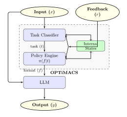

OPTIMACS
OPTIMACS: Learning Optimal Message Representations for Agentic Communication
This blog talks about my take on building OPTiMACs, and the challenges.
Why?
Current LLM frameworks predominantly rely on natural language for communication, an approach that is often ambiguous and unoptimized for specific task requirements. While alternative formats exist, the literature remains fragmented: (1) studies rely on narrow, ad-hoc selections of representations; (2) fail to generalize to new domains; (3) overlook multi-agent complexities like agentic scaffolding considerations; and (4) lack a theoretically grounded framework for efficient format discovery.
We address these limitations through a unified optimization framework. Our contributions are threefold: (1) we establish the performance ceilings of static representations in both standard LLM prompting and multi-agent settings, highlighting the critical need for adaptive format discovery; (2) we propose novel algorithms and problem modeling approaches—formulating prompting optimization as a parallel-strategy tabular-contextual bandit and introducing the Expanding Markov Decision Process (EMDP) for multi-agent settings; and (3) we present OPTiMACS (Optimal Prompt Transformation in Model & Agent Communication Systems), a framework that leverages these formulations to dynamically learn optimal representations from interaction feedback.
Evaluations across LLM prompting problem solving and collaborative multi-agent tasks (multi-hop QA, mutual problem solving) show our methods identify task-aware formats that significantly outperform natural language, LLM-suggested formats, and static formats; achieving high efficiency without model fine-tuning.
What?
Preliminaries
We introduce the key concepts used in our framework:
- Policy (π): A strategy mapping states (contexts) to actions (decisions), denoted as π(a|s).
- Contextual Bandits: A simplified reinforcement learning setting where an agent observes a context, selects an action, and receives an immediate reward, without state transitions. We use this for single-step prompting.
- Markov Decision Processes (MDPs): A framework for sequential decision-making characterized by states, actions, transitions, rewards, and a discount factor. We employ this for multi-agent coordination where current decisions alter the dialogue trajectory.
- Off-Policy Learning: Learning the value of a target policy (optimal formats) while following a different behavior policy for exploration.
Formulation for 1-step LLM Calls
We first formalize the problem of LLM prompting. While A/B testing can identify a globally superior static prompt, it fails to capture instance-specific preferences. A contextual-bandit formulation addresses this by learning a policy that maps specific contexts to optimal actions. Our formulation involves two key differences from standard methods:
- Tabular State Space: We discretize the context into semantic task categories (e.g., Code Generation, Reasoning) rather than using vector-based states. This allows for interpretable, data-efficient learning.
- Ensemble Exploration: We utilize a union of diverse strategies rather than a single policy to ensure robust coverage of the search space.
Multi-Agent System Formulation
Extending to multi-agent settings introduces challenges like state transitions, delayed rewards, and combinatorial explosion. We model this as an Expanding Markov Decision Process (EMDP).
In our setting, the universe of tasks and optimal formats is not fixed. The EMDP formulation handles:
- Evolving State-Action Spaces: As agents discover novel tasks and optimal formats online.
- Non-Stationarity: Arising from the continuous expansion of these spaces.
- Latent State Uncertainty: Since task categories are inferred rather than observed.
Algorithms
We present the core algorithms for our framework. Algorithm 1 describes the single-step prompt optimization, while Algorithm 2 details the multi-agent EMDP learning process.
Input: Training Dataset D (Training) / Query x (Inference)
If Training:
1. Task Selection: Cluster all x_i ∈ D into semantic tasks T.
2. Format Learning: For each x_i ∈ D:
C ← ∅ // Candidate set
For each strategy k ∈ {1...K}:
c_k ← Strategy_k(x_i, t_i, Q)
C ← C ∪ {c_k}
For f ∈ C:
y_hat ← LLM(x_i, f), r ← Verify(y_hat, y_i)
Q(t_i, f) ← Q(t_i, f) + r // Update score
Else (Inference):
1. t ← ClassifyTask(x)
2. Return f* = argmax_f Q(t, f)
Initialize: for all s ∈ T, a ∈ F(s):
Q(s,a) ← arbitrary, C(s,a) ← 0
μ(a|s) ← w_Q * π_Q + w_L * π_L + w_D * π_D (behavior policy)
π(s) ← deterministic policy greedy wrt Q
Repeat until convergence:
1. Sample msg from queries/problems.
2. Generate Episode using behavior policy μ(a|s):
Repeat until episode end:
T_t ← TaskCategorization(msg, context)
F_t ← μ(T_t, context)
prompt ← ApplyStructure(msg, F_t)
msg, R_{t+1} ← Agent_t(prompt)
If Expansion Phase: T ← T ∪ {T_t}, F ← F ∪ {F_t}
t ← t+1
4. Calculate Returns G and Update Q-values using Weighted Importance Sampling.
How?
The OPTiMACS framework utilizes a shared high-level architecture: a Task Classifier identifies the context, a Policy Engine selects the format, and a Feedback Loop drives learning.

Figure 1: The OPTiMACS Framework Architecture
OPTiMACS for Prompting (Single-Agent)
We model this as a Tabular Contextual Bandit.
- State: The semantic task category of the input.
- Policy Engine: Uses a weighted Ensemble of 14 Strategies, encompassing score-based exploitation, frequency-based exploration, and Meta-LLM guided inductive biases.
- Inference: The system switches to a pure exploitation policy.
OPTiMACS for Coordination (Multi-Agent)
We model this as an Expanding Markov Decision Process (EMDP).
- Dynamic Classifier: Includes an Expansion Phase; if confidence in existing task categories is low, it proposes a new task node.
- Internal Memory: Grows dynamically, storing the evolving taxonomy and Q-values.
- Policy Engine: Uses Every-Visit Monte Carlo methods to handle sparse rewards (received only at the end of a trajectory).
Experiments
Datasets
Single-Agent Prompting: We utilize three diverse reasoning benchmarks:
- AQuA-RAT: Algebraic word problems.
- CoinFlip: Symbolic manipulation and state tracking.
- LogicGrid: Constraint satisfaction and logical deduction.
Multi-Agent Coordination:
- Collaborative Problem Solving (GSM8k): A 3-agent team (Solver, Coder, Verifier) solving math problems.
- Distributed Multi-Hop QA: Using HotpotQA and NarrativeQA, where information is partitioned among agents, requiring optimized communication to solve.
Setup
We benchmark against three baselines:
- Natural Language
- Autoform (LLM-proposed formats)
- Fixed Formats / A/B Testing (Static formats like JSON or Code)
Results
(Full quantitative results to be added)
Our evaluations show that OPTiMACS identifies task-aware formats that significantly outperform natural language and static formats. The system achieves high efficiency in terms of token usage and latency without model fine-tuning.
Discussion
Why Formats Work
- Prompt Equalization: Formats help bring reasoning paths for similar data and contexts closer together, similar to how Chain-of-Thought works.
- Ambiguity Minimization: Forcing structured schemas minimizes ambiguity and forces the model to attend to specific information that might otherwise be overlooked.
Insights
- LLMs often have non-obvious preferences. For example, for table tasks, column-oriented formats worked well; for SQL, specific schema constraints were effective.
- Models generally prefer compact structures over verbose natural language.
- There is significant "format bias" – variance in performance across different formats can be massive (up to 253%), highlighting the importance of selection.
Future Directions
- Exploring code-based formats (e.g., using Python for sorting vs Assembly for memory modeling).
- Investigating mixtures of formats for information segregation.
- Designing novel formats suited for specific purposes, such as token efficiency or context passing.
Limitations
A key limitation is the dependency on the LLM's ability to follow format conversion instructions. Performance is bounded by how effectively the underlying model can adhere to the requested structure.
Conclusion
OPTiMACS provides a unified framework for learning optimal communication representations in both single-agent and multi-agent systems. By treating format selection as a learning problem, we bridge the gap between rigid protocols and ambiguous natural language.
Related Works
Recent studies have shown that specific structured representations often outperform natural language. However, relying on fixed formats can vary in effectiveness. Approaches like Autoform attempt to query LLMs for formats but can be inconsistent.
Our work differs from:
- Custom Infrastructure (MCP, FIPA-ACL): Which provide candidates but not the intelligence to select them.
- Prompt Optimization (APE, OPRO): Which optimize semantics, whereas we optimize syntax (format).
- Reasoning Frameworks (CoT, PoT): Which structure reasoning logic; we optimize the message syntax within these steps.
Appendix
Standard Frameworks
Contextual Bandits: Defined by a tuple <X, A, R>, maximizing cumulative reward
based on context.
MDPs: Defined by <S, A, P, R, γ>, modeling sequential decision making.
EMDP Formulation
The Expanding MDP (EMDP) allows state and action spaces to evolve.
Expansion Mechanism: New tasks and formats are added to the sets T and F dynamically.
Update Rule: We use off-policy weighted importance sampling to update Q-values, handling
the evolving space.
References
[1] Chen et al. (2024). Beyond Natural Language: LLMs Leveraging Alternative Formats for Enhanced Reasoning and Communication. EMNLP 2024.
[2] Singh et al. (2024). Asking Language Models How to Represent Data for Fine-Tuning. arXiv:2402.10842.
[3] Beurer-Kellner & Vechev (2024). Let Me Speak Freely? A Study on the Impact of Format Restrictions on Performance of Large Language Models. arXiv:2408.02442.
[4] Xu & Wang (2024). LLMs Are Biased Towards Output Formats! Systematically Evaluating and Mitigating Output Format Bias of LLMs. arXiv:2408.08656.
[5] Sahoo & Singh (2024). Does Prompt Formatting Have Any Impact on LLM Performance?. arXiv:2411.10541.
[6] Tian et al. (2024). Can LLMs Reason in the Wild with Programs?. arXiv:2406.13764.
[7] Wang et al. (2024). Verifiable Format Control for Large Language Model Generations. EMNLP 2024.
[8] Zhou et al. (2023). Large Language Models Are Human-Level Prompt Engineers. ICLR 2023.
[9] Yang et al. (2023). Large Language Models as Optimizers. arXiv:2309.03409.
[10] Deng et al. (2022). RLPrompt: Optimizing Discrete Text Prompts with Reinforcement Learning. EMNLP 2022.
[11] Wei et al. (2022). Chain-of-Thought Prompting Elicits Reasoning in Large Language Models. NeurIPS 2022.
[12] Chen et al. (2022). Program of Thoughts Prompting: Disentangling Computation from Reasoning for Numerical Reasoning Tasks. arXiv:2211.12588.
[13] Sutton & Barto (2018). Reinforcement Learning: An Introduction. MIT Press.
[14] Watkinds & Dayan (1992). Q-learning. Machine Learning.